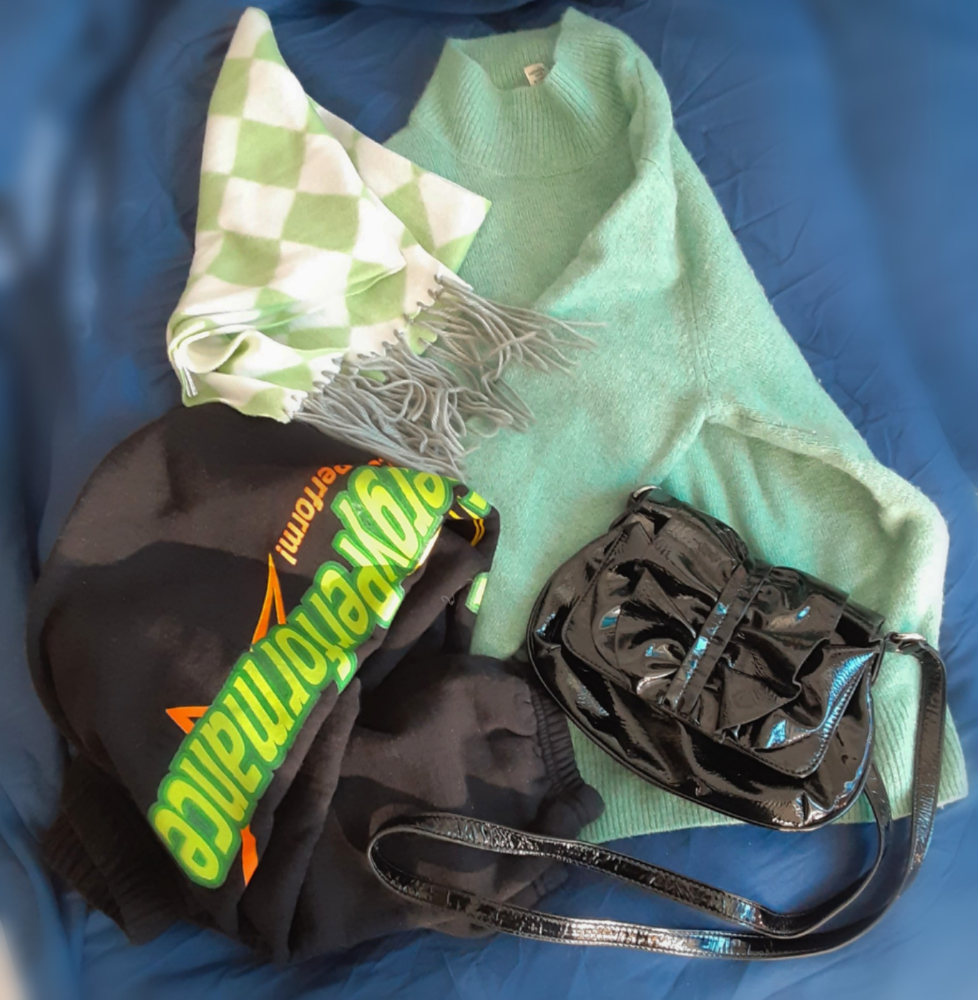

Greenwashing
Then, what does Greenwashing mean? Greenwashing is that the fast fashion companies promote themselves as ethical and sustainable when it is not or it has an insignificant impact. They gain indulgence and encourage consumption in doing so. “Being Green” becomes another trend and they imitate it. For example, Adidas released the ad called “Stan Smith Forever. 100% iconic, 50% recycled”. It sounds hopeful, but JDP - Advertising Ethics Committee in France - ruled the ad is misleading consumers. The JDP said that “50% recycled” deceives people to make them think that Adidas used 50% of the total material to be recycled to make the sneakers, but it is not.
Slow Fashion
The term of slow fashion is rising against fast fashion and current flow of fashion industry. Slow fashion aims more sustainable and fair fashion, minimizing harm to Earth and working environment. You can search for some slow fashion brands based on where you live. For these characteristics, you can spot that they are slow fashion brands; - High quality clothings, using sustainable materials
- Style is timeless rather than following trends
- Run a small local stores rather than big chain enterprises
- Use local materials and produce locally
- Released collections have few specific styles
Overconsumption
Basically, the problem of fast fashion is overconsumption. As mentioned in past article, too many brands are manufacturing too many clothings to satisfy a big amount of demand in different taste and quick-changing trend. To stop overconsumption, British Designer Vivienne Westwood noted;
“Buy Less, Choose Well, Make it Last.”
It is important to buy less, because most people shop another clothings when they already have similar one in their wardrobe. Have time for digging into your wardrobe! You might find something new (it is not, but feels like it is new). Try matching the piece with other items that you haven’t imagined before.
Choosing the right item is significant skill. Before buying the clothing, think twice. Do I really need it? What material is this made of? How long can I wear it? Can I wear this 10 years later as well? Did this brand produce clothings in eco-friendly?
Once you buy the clothing, make it last for a long time. Washing too frequently not only harm the textiles, but also release microplastics. Understand washing and keeping method. When the clothes are torn or the button has fallen off, go to the tailor or repair services. If you got sick of the design, try remake it with stitching and sewing! You can get your own unique design.
Find Treasure
If you cannot buy less because you are craving for new style, what about shopping at second hand stores! You can find various styles in much cheaper prices than new ones. You don’t need to worry about the quality, as most vintage clothings are super sturdy that made them vintage. Even if it is not old clothings, most items in second hand are clean and like new.  The items in the picture are own belongings, and all of them are purchased in the thrift store “Value Village”. Look great, right? Peronally I visit frequently thrift stores to find out what they have. I have been there fore years and what I found is that most items in there are rather new, clean, various and even trendy. I could get unexpected treasure everytime I get there, with a whole aesthetic and mood that never cannot be found in fast fashion stores. Other than Value Village, it is not hard to find second hand shop in Toronto. Based on my own experience, I highly willing to shop again at second hand shop more than fast fashion stores!